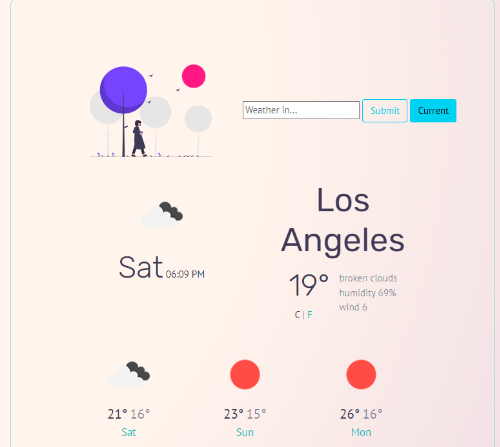
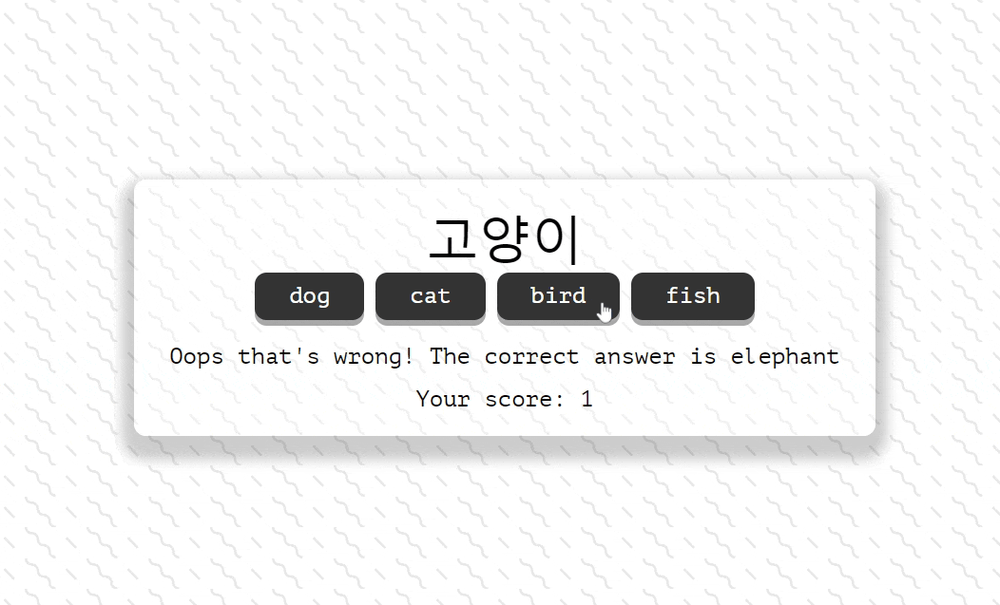

Projects

Weather In Forecast
A weather forecast page where the user can check their current
location's weather, as well as the weather for any major city. The
displayed temperature can be converted from Celsius to Fahrenheit.

Hada Vocab Quiz
Users learning Korean can check to see their word knowledge. The app
tracks the user's score and tells them the correct answers when they get
a question wrong.
Hi, I'm Ashelle (prounounced uh-shell), illustrator turned web
developer. Like many people, I've dabbled a bit with coding when I was a
teen. Tweaking HTML and CSS here and there on my Myspace layout and
Tumble blogs (remember those times?). For years, I worked as a digital
artist, illustrating custom art and indie published work. It really
wasn't until I stumbled upon SheCodes, a program that teaches women how
to code, that I was inspired to get into web developement. As a
creative, it seemed a perfect opportunity to learn and hone some tech
skills, solving problems, while creating clean and aesthetically
pleasing pages. I was hooked.
Early 2022, SheCodes has helped me learn and developed projects using
HTML, CSS, Javascript, Bootstrap, and API. I'm continuing to learn every
day. As I've worked independently a good portion of my life, I've always
aimed to do good work with dogged determination and continue to improve
myself. That said, I also enjoy working with others whenever interesing
group-oriented projects land my way. I would love to work with other
creatives and programmers who value inclusivity, empathy, and friendly
open communication.